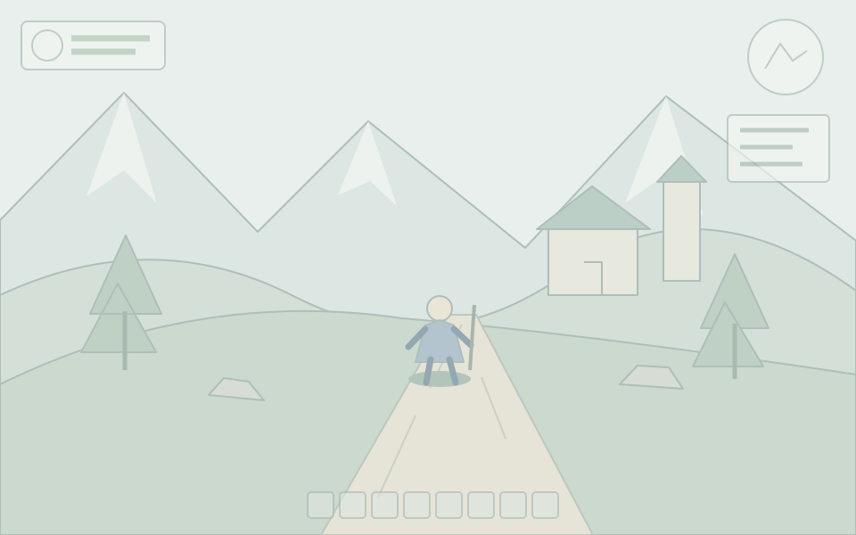
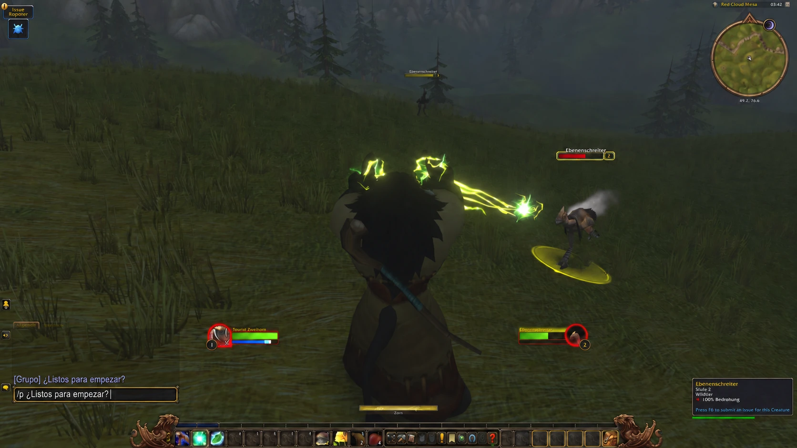

Transcripción local rápida
Los mensajes cortos pueden estar listos en menos de un segundo, sin salir de tu dispositivo.
Voz a texto para juegos y apps en SteamOS. Rápido, local y pensado para mando.


Usa tu combinación favorita de botones del mando.
Decktation transcribe tu voz en tu dispositivo.
Tu mensaje se escribe directamente en el juego o app.
Habla con tu hermandad, grupo y amigos sin soltar el mando.


Diseñado para Steam Deck y PCs SteamOS controlados con mando.
Los mensajes cortos pueden estar listos en menos de un segundo, sin salir de tu dispositivo.
Atajo configurable, hápticos y mandos compatibles.
El audio y las transcripciones permanecen en tu dispositivo.
Comportamiento optimizado para WoW, Guild Wars 2 y entrada de texto genérica.
Decktation se instala mediante Decky Loader. No necesitas paquetes adicionales de Linux.
Abre los ajustes de Decky y activa el modo desarrollador.
En las opciones de desarrollador de Decky, elige Instalar plugin desde URL. Pega la URL de abajo y confirma la instalación.
https://silverfoxy.github.io/decktation/latest.zip
Abre Decktation desde Decky, elige tu perfil de juego e idioma y actívalo.
Colócate en un campo de texto de tu juego o aplicación. Mantén pulsados L1 + R1 (el atajo predeterminado), habla y suelta ambos botones. Tu mensaje se escribirá en el campo.
La instalación por URL requiere actualizaciones manuales hasta que esté disponible en la tienda oficial de Decky.
Decktation procesa el audio y las transcripciones localmente. Tu dictado no se envía a un servicio de transcripción en la nube.
Perfil de chat específico del juego.
Perfil específico del juego.
Dicta en campos de texto activos de otros juegos y aplicaciones.
El modo Generic puede funcionar donde Decktation pueda introducir texto de forma segura en el campo activo.
Necesitas conexión para descargar un modelo Whisper la primera vez. Después, el dictado se procesa localmente.
No. El audio y las transcripciones se procesan localmente. Los diagnósticos opcionales son independientes y requieren consentimiento.
No. Decktation incluye comportamiento para WoW, Guild Wars 2 y modo Generic para otros campos de texto compatibles.
Los mensajes cortos pueden estar listos en menos de un segundo después de soltar los botones. El tiempo varía según tu dispositivo, el modelo elegido, la duración del mensaje y la carga del juego.
Sí. El código, las versiones y el seguimiento de incidencias están en GitHub.
Diseñado para Steam Deck y sistemas SteamOS controlados con mando. La compatibilidad del hardware y del mando puede variar.
Una vez descargado el modelo Whisper necesario, el dictado se procesa localmente sin un servicio en la nube.
Decktation lee el mando e introduce texto mediante los permisos de Decky. El dictado se trata como datos y nunca se ejecuta como una orden del sistema.
Consulta las versiones y builds de desarrollo para probar los próximos cambios y compartir tus comentarios.
Versiones y builds de pruebaInstala Decktation y empieza a dictar dentro de tus juegos.